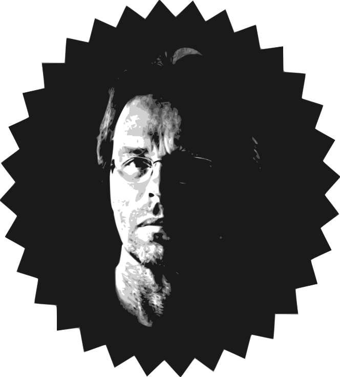

Clemens Jongma
- Riouwstraaat 10
- 7541 ZX Enschede
- 06-128 56 404
- info@jongmac.nl
Vaardigheden
- Zelfstandige samenwerker
- Creatief, analytisch en zorgvuldig
- Uitgebreide kennis van HTML, CSS, JavaScript, Photoshop en Inkscape
- Bekend met PHP, MySQL, GIT, Scrum
- Ruime ervaring met digitale fotoapparatuur
- "Zorgzaam, gezellig en creatief" volgens collega's
2018 - Heden:
Junior webdeveloper in opleiding
- Uitgebreide kennis van HTML, CSS en JavaScript.
- Bekend met PHP en MySQL.
- Bekend met GIT en Scrum.
- Per direct beschikbaar
2010 - 2018:
Zelfstandig Vormgever/tekstschrijver/fotograaf:
- Gebouwen en kunstwerken fotograferen op locatie of in studio
- Foto's bewerken en gereed maken voor print en internet.
- Achtergrondinformatie opzoeken, contacten leggen met deskundigen en toelichtingen schrijven.
- Titels van tentoonstellingen bedenken, logo's ontwerpen en grafische vormgeving verzorgen.
- Lezingen en rondleidingen samenstellen en verzorgen op verzoek.
2008 - 2009:
Projectleider 'ik
enschede'
- Tentoonstellingsconcept, titel en logo bedacht.
- Verantwoordelijk voor budget van € 120.000,-
- Organisatie van 3 tentoonstellingen,
2000 - 2008:
Webmeester/beheerder 24uursmuseum.nl:
- Controleren en fotograferen van buitenkunstwerken
- Achtergrondinformatie verzamelen in bibliotheken en archieven
- Toelichtingen schrijven, werken fotograferen
- Naam bedacht en logo ontworpen
- Vervolgopdracht collectie binnenkunst in teamverband uitgevoerd
1990 - 2000:
Bestuurslid Stichting Villa de Bank
- Tentoonstellingen organiseren
- Correspondentie verzorgen
- Atelierbezoeken afleggen
- Boekproject bedacht
- Architectuurlezingen georganiseerd
1998 - 2002:
Penningmeester Stichting voor Kunst en Ateliers
- Verantwoordelijk voor administratie
- Verantwoordelijk voor financiële zaken
- Verantwoordelijk voor onderhoud atelierpand
1988 - 1989:
Medewerker/samensteller Tart-festival
- Samenstelling tentoonstelling en optredens verzorgd
- Bewegwijzering ontworpen
opleiding
- Bootcamp CodeGorilla 2018 - 2019
- AKI Enschede 1979 - 1985: Binnenhuisarchitectuur
- RSG Leeuwarden: 1972 - 1979: Diploma VWO